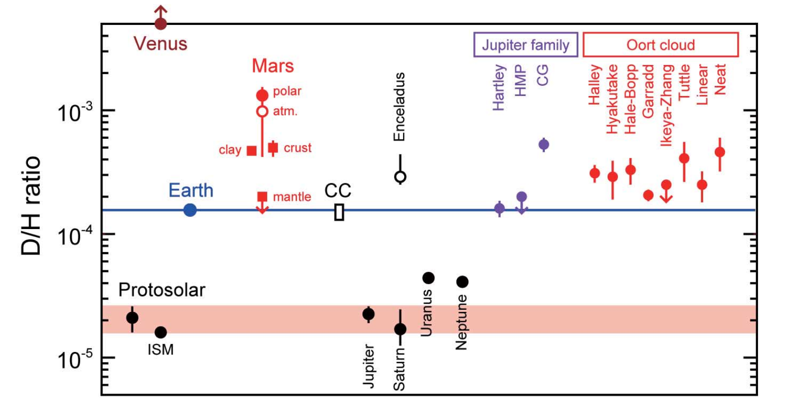
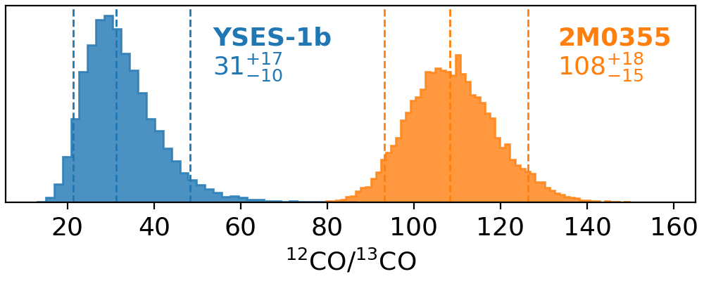

Isotope abundance ratios play an important role in astronomy and planetary sciences, providing insights in the origin and evolution of the Solar System, interstellar chemistry, and stellar nucleosynthesis. Isotopologue abundance ratios in exoplanet atmospheres have been proposed to be new observational probes for planet formation ( Molliere & Snellen 2019; Morley et al. 2019) as inspired by solar system measurements. In the Solar System, deuterium-to-hydrogen (D/H) ratios demonstrate significant variations across planets, comets, and meteorites, providing important insights into the origin and evolution of the system (see Figure 1). While the D/H ratios in Jupiter and Saturn are consistent with the protosolar value, the ice giants Uranus and Neptune are enhanced in deuterium by a tractor of two, which is likely attributed to the accretion of D-rich icy planetesimals. The enrichment can be further accentuated by over two orders of magnitudes through mass-dependent atmospheric evaporation such as occurred in Mars and Venus. Isotope ratios of other elements such as carbon and oxygen, involving similar temperature- and radiation- dependent processes (called fractionation) in protoplanetary disks, are also potential tracers of planet formation.

Outstretching isotopic measurements to exoplanets has made a major advancement with our first detection of carbon isotopes in the atmosphere of the young, accreting super-Jupiter TYC 8998 b ( Zhang et al. Nature, 2021, and a short video presentation). The atmosphere of the super-Jupiter is determined to be 13CO-rich with 12CO/13CO~31, which means a factor of two enhancement of 13C compared to the local interstellar medium (12C/13C~68). A formation outside the CO ice line to attain carbon contents mainly from accretion of 13C enriched ices (as an analogy to the D-enrichment in Solar System ice giants) has been invoked to explain the atmospheric enrichment (see Figure 2). Similar enrichment was also suggested in the atmosphere of the hot-Jupiter WASP-77Ab ( Line et al. Nature, 2021).
![Cartoon of the birth environments of planets in a proto-planetary disk. The two planets inside the CO snowline denote Jupiter and Neptune at their current locations, while TYC 8998 b is formed far outside this regime, where most carbon is expected to have been locked up in CO-ice and formed the main reservoir of carbon in the planet. We postulate that, this far outside the CO snowline, the ice was 13CO- or 13C- rich through carbon fractionation, resulting in the observed 13CO-rich atmosphere of the planet.](Figure2.JPG)
Our further analysis of a young brown dwarf (2M0355) and a few super-Jupiter companions (such as GQ Lupi b and DH Tau b) reveal cases of both depletion and enrichment of carbon-13 in their atmospheres (see Figure 3), hinting at distinct formation pathways ( Zhang et al. 2021b), which therefore calls for a larger sample and comparative studies to investigate the patterns. Future isotopologue measurements in exoplanet atmospheres can provide unique constraints on where, when and how planets are formed.
